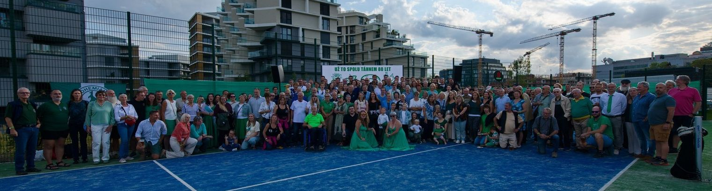

Plavecký oddíl Bohemians Praha
Jsme plavecký oddíl Klokanů s osmdesátiletou tradicí. Vychováváme sportovce od dětských kurzů a přípravky až po reprezentaci na mistrovstvích republiky a Evropy. Našimi domovy jsou plavecký stadion Podolí a bazén Vinohrady.

Velká cena Prahy - hodnocení
Jestliže patřil v sobotu radlický bazén mladším plavcům, tak v neděli se do soutěžení v Radlicích zapojili starší plavci. Účast bohemáků byla slušná, závodní nasazení bylo dobré...
Velká cena města Plzně
3. 10. 2026 · Plzeň – Slovany
Lékařské prohlídky pro závodní plavce je nutné odevzdat trenérům nejpozději do 15. října 2026.
Plzeňské sprinty 2026
Odjezdy, rozplavání, ubytování a instrukce pro závodníky Bohemians.
Přihlášky a výsledky
Přihlaš se na závody, zkontroluj si své časy, rekordy a platby příspěvků.
Aktuality
Další aktuality z oddílu
Nástěnka trenérů
Vzkazy pro rodiče & Infolístky
Tréninky ST+ODA+G týden do 18.10.
Tréninky v Podolí a na Vinohradech probíhají dle platného rozvrhu. Plavci závodních družstev nezapomeňte na povinnou suchou přípravu a dochvilnost.
Detail vzkazu →Přípravka: ukázková hodina ve čtvrtek 15. 10.
Ukázková hodina pro rodiče dětí v přípravce na bazénu Vinohrady. Sraz v 16:15 v hale bazénu Slovenská. Vstup na ochoz bazénu pouze v přezůvkách.
Detail vzkazu →Infolístky k závodům
PDF z boh.czKde trénujeme
Naše domácí bazény
Plavecký stadion Podolí
Podolská 74, 147 00 Praha 4
Centrální tréninkové středisko pro závodní družstva A, B, C a Masters. K dispozici je 50m vnitřní bazén, 50m venkovní celoročně vyhřívaný bazén, 33m skokanský bazén a posilovna.
TJ Sokol Královské Vinohrady
Slovenská 2, 120 00 Praha 2
Historický 25m bazén využívaný primárně pro základní a zdokonalovací kurzy plavání dětí, závodní přípravku a kondiční plavání pod dohledem trenérů Bohemians.
Tréninkové skupiny
Cesta od kurzů až po reprezentaci
Základní a zdokonalovací kurzy plavání pro děti
Hledáte plavání pro své dítě v Praze? Pořádáme kurzy od prvních temp pro nejmenší až po přípravu na závodní plavání. Trénujeme na bazénech Sokol Vinohrady a Plavecký stadion Podolí pod vedením kvalifikovaných cvičitelů a trenérů oddílu Bohemians.
Dokumenty ke stažení
Rozdělení do drah na sezónu 2026/27, rozvrhy tréninků, platby příspěvků, lékařské posudky a oddílové směrnice v PDF.
Statistika & Žebříčky
Top 10 oddílové výkony všech dob, hodnocení AQUA/FINA bodů, rekordní tabulky a vyhledávač plavců oddílu TJ Bohemians Praha.